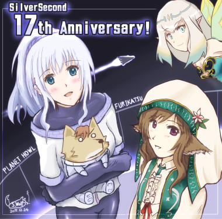

■2015-12-24 (木) サイト17周年！▼
↓クリックで拡大

『プラネットハウル』からスノウ＆ウォー（左）と
『振リ返リマセン勝ツマデハ』からメモリア（右上）＆ネムリ（右下）
ということで、12/24をもってSilverSecondは17周年を迎えました！
ここまで続けられたのも皆さまのおかげです、
いつも本当にありがとうございます！
今年を振り返ってみると、
1～2月頃 ： 『片道勇者プラス』のバグ修正で大騒ぎ
3月 『不思議のクロニクル 振リ返リマセン勝ツマデハ』発表
片道勇者プラスのローカライズ作業
4月 『片道勇者プラス』英語版のリリース（PLAYISMさんちで）
7月 『不思議のクロニクル 振リ返リマセン勝ツマデハ』発売！
8月 ウディコン開催 ＋ 『片道勇者プラス』Steamリリース
9月 『プラネットハウル』 第1話リリース
10月 『プラネットハウル』 第2話リリース
12月 『プラネットハウル』 第3話リリース
と本当にイベント盛りだくさんな一年でした。
『プラネットハウル』はまだ表に情報が出てない内からドタバタしてたので、
『振リ返リマセン勝ツマデハ（フリカツ）』の裏でも実はすごいことになってました。
その分、今年も一年に渡って本当に面白い挑戦と体験ができたと思います。
一方で、『片道勇者プラス』から休みなしで『プラネットハウル』の開発に
入っていたので数年連続で全力を尽くす状態になってしまい、
体の芯から少しヘトヘトになってしまったところもあります。
しばらくはゆっくりさせていただこうと考えております。
【今年のゲームを振り返って】
＜片道勇者 ～ 片道勇者プラス＞
結局、『片道勇者』は私がこれまで作った全作品の中で
つきあいが一番長いゲームになったかもしれません。
うまくいったところもそうでないところも、そして学んだこともたくさんあります。
新たな価値観を学ぶきっかけにもなりましたし、
忘れかけていた夢を叶えてくれたきっかけにもなったので
人生において特に幸せな開発だったように思います。
そしてまだ『片道勇者』の展開は全て終わってなくて、
学んだことやゲーム内で表現しきれなかったことをまとめておこうと
ただいま『片道勇者 開発記』を書いている最中です。
来年2月くらいにリリースできたらいい感じでしょうか、お楽しみに。
＜プラネットハウル＞
『プラネットハウル』はゲーム面の自分の好みを全力で押し出した一作になりました。
かけられる時間は結構ギリギリでしたが、ゲーム的にやりたいことは
できる範囲でそこそこの質で表現できたと思います。
ストーリー面の話はシナリオ担当のPERYKARN氏にほぼ完全にお任せでしたが、
SF世界観は好みだったので1読者としてもとても楽しませていただきました。
本作ではチーム（＋編集付き）開発や連載方式の利点と弱点を、そして同時に
個人開発の長所と欠点、それから時間のありがたみも学ぶことができました。
どんなやり方もいいところがあって、全てに何か弱いところがあると学んだので
今後は目的に応じて手段をもっとうまく選べるようになると思います。
＜振リ返リマセン勝ツマデハ＞
『不思議のクロニクル 振リ返リマセン勝ツマデハ』は
『片道勇者』が原案のPS4、PS Vita用のコンシューマゲームです。
もうだいぶ前にあきらめていた夢が今になって叶ってしまった一作になりました。
「自分のアイデアのゲームをネタバレなしに遊べる」という幸せを味わえた
ゲーム開発者は、きっと宝くじにあたった人の数よりだいぶ少ないでしょう！
そういう意味では、本当に幸せな体験をさせていただきました。
全体的に原作よりハジけてたのは
さすがスパイク・チュンソフトさんという感じでした。
ゼヌーラの全裸立ち絵とか私でも付けませんよ！？ ありがとうございます！
EDテーマ曲その他が早くシングルかアルバムかitunｅsなどで
発売されるといいなと思っています。
【今年も一年、ありがとうございました！】
いろいろなことがあった一年でしたが、学んだことを糧に、
来年からもまたやれる分だけ挑戦を続けていきたいと考えています。
だんだんとガタガタになってきているので体を少し大事にしていきたいです。
今年の開発日誌は、これで最後となります。
次回は2016年の1月1～3日あたりに更新を予定しております。
いつも見てくださる皆さま、遊んでくださっている皆さま、そして
サイトに来て下さる皆さま、今年も一年、本当にありがとうございました！
それでは、みなさまの2016年が良い一年になりますように！
2015-12-24 (木)  カテゴリ: 開発日誌
カテゴリ: 開発日誌
 カテゴリ: 開発日誌
カテゴリ: 開発日誌